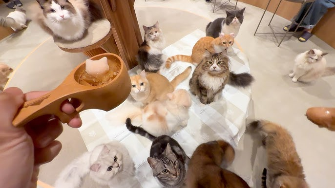

Welcome to our cozy cafe!
This cat cafe, founded by Tee Qi Xiang in the 1990s, features many stray rescued cats all around Singapore! We provide these cats with food, water, shelter, as well as regular medical checkups to ensure that they are at the peak of health. Most of our cats are also up for adoption, so in case you fall in love with one of our cats during your visit here, do check out our events page to see whether there are any adoption events ongoing! Thank you for supporting our cafe, and we hope that you have the best experience here!
